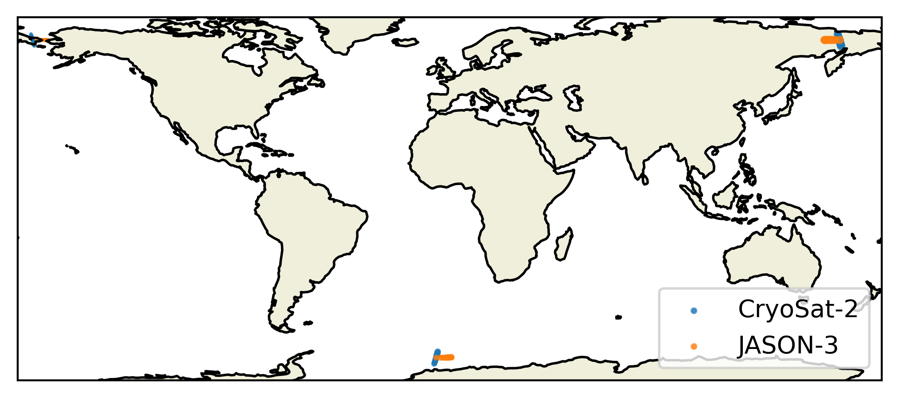

Quickstart Guide#
Installing orbitx#
The Orbit class#
The Orbit class is used to simulate the orbits of satellites.
It relies on orekit to simulate the position of satellites based on Two Line Elements (TLE) and on a linear interpolation to obtain a sufficiently fine time resolution while keeping compute time low enough.
A basic use of this class is as follows:
from orbitx import Orbit, Matchups
import datetime
orbit = Orbit.simulate(
satellites=["S6", "SA"],
start_date=np.datetime64("2020-02-01T00:00:00"),
end_date=np.datetime64("2020-02-01T12:00:00"),
propagation_sampling_interval=np.array(20, dtype="timedelta64[s]"),
interpolation_sampling_interval=np.array(5, dtype="timedelta64[s]"),
reference_date=np.datetime64("2000-01-01T00:00:00")
)
print(orbit)
Orbit object for satellites ['S6', 'SA'].
Start date: 2020-02-01T00:00:00
End date: 2020-02-01T12:00:00
Propagation sampling interval: 20 seconds
Interpolation sampling interval: 5 seconds
Reference date used to represent time in seconds since: 2000-01-01T00:00:00
Number of simulated times: 8641
The satellites attribute is a list of satellite short names of arbitrary length.
The supported short names are currently the following ones:
"LS8": "Landsat-8",
"LS9": "Landsat-9",
"S2A": "Sentinel-2A",
"S2B": "Sentinel-2B",
"S3A": "Sentinel-3A",
"S3B": "Sentinel-3B",
"S6": "Sentinel-6",
"J2": "JASON-2",
"J3": "JASON-3",
"SA": "Saral-AltiKa",
"CS2": "CryoSat-2",
"LINCS2": "Lin-CryoSat-2",
"N20": "NOAA-20"
Note that the attributes start_date, end_date, and reference_date (optional defaulting to 1st of January 1970) must be given as numpy
[datetime64 objects](https://numpy.org/doc/stable/reference/arrays.datetime.html)
and the attributes propagation_sampling_interval and interpolation_sampling_interval must be given as numpy timedelta64 objects.
An orbit object can simply be plotted with a call to the plot method of the class:
orbit.plot()

The core of an Orbit class object is its orbits attribute.
It contains an xarray.Dataset object.
This dataset uses a time coordinate, which is given in seconds since the chosen reference date (float64).
It contains the following variables:
time_datetime: gives anumpy.datetime64representation of the time coordinate
lat<i>(igives the number of the satellite in thesatellitesargument) latitude of the satellite
lon<i>(igives the number of the satellite in thesatellitesargument) longitude of the satellite
- And it contains the following attributes:
satellites: the list of the satellites for which orbits are givenstart_date: The start date of the orbit in seconds since the reference dateend_date: The end date of the orbit in seconds since the reference datepropagation_sampling_interval: the number of seconds separating two successing simulated (physics based) positions in the orbitinterpolation_sampling_interval: the number of seconds separating two interpolated positions in the orbit
print(orbit.orbits)
<xarray.Dataset> Size: 415kB
Dimensions: (time: 8641) Coordinates:
time (time) float64 69kB 6.338e+08 6.338e+08 … 6.339e+08
- Data variables:
reference_date datetime64[s] 8B 2000-01-01 time_datetime (time) datetime64[s] 69kB 2020-02-01 … 2020-02-01T12:00:00 lat1 (time) float64 69kB 13.25 13.49 13.74 … 10.52 10.27 10.03 lon1 (time) float64 69kB 171.5 171.5 171.6 … 159.3 159.4 159.5 lat2 (time) float64 69kB -74.64 -74.89 -75.13 … -46.66 -46.37 lon2 (time) float64 69kB -124.0 -124.6 -125.3 … -81.88 -81.99
- Attributes:
satellites: [‘S6’, ‘SA’] start_date: 633830400.0 end_date: 633873600.0 propagation_sampling_interval: 20.0 interpolation_sampling_interval: 5.0
An Orbit object can be exported to netCDF4 format and loaded from such a file as well (as long as the structure is as expected).
orbit.to_netcdf("./test_export/")
loaded_orbit = Orbit.from_netcdf("./test_export/2020-02-01_2020-02-01_psi20.0_isi5.0_orbit_S6_SA.nc")
print(loaded_orbit == orbit)
True
The Matchup class#
The Matchups is used to find the time and location of matchup events (that is two or more satellites passing through the same location window within a short time-frame).
A typical use example is as follows:
from orbitx import Matchups
import datetime
from orbitx import Matchups
import numpy as np
matchups = Matchups.find_matchups(
satellites=["CS2", "J3"],
start_date=np.datetime64("2012-01-01T00:00:00"),
end_date=np.datetime64("2012-01-01T12:00:00"),
propagation_sampling_interval = np.array(60, dtype="timedelta64[s]"),
interpolation_sampling_interval = np.array(5, dtype="timedelta64[s]"),
space_diff_threshold = 290,
time_diff_threshold = np.array(900, dtype="timedelta64[s]"),
check_before = True,
check_after = True,
has_land_ocean_mask = True,
reference_date=np.datetime64("2000-01-01T00:00:00")
)
print(matchups)
Matchup object with following attributes:
Satellites considered: ['CS2', 'J3']
Date from which matchups are looked for: 2012-01-01T00:00:00
Date until which matchups are looked for: 2012-01-01T12:00:00
Maximum time difference between members of a matchup: 900 seconds (seconds)
Maximum distance between members of a matchup: 290.0 (km)
Are matchups in which on of the satellites appears before the start date considered? True
Are matchups in which on of the satellites appears after the end date considered? True
Has this matchup a land/ocean mask? True
Number of matchups found: 53
The space_diff_threshold argument represents the maximum accepted distance (in kilometers, projected on Earth surface from the satellites latitude and longitude) between two satellites for an event to be considered a matchup.
The time_diff_threshold argument represents the maximum time between the passing of any two satellites for an event to be called a matchup.
The check_before argument specifies whether a matchup where one of the satellites crossed before start_date should be considered
The check_after argument specifies whether a matchup where one of the satellites crossed after end_date should be considered.
has_land_ocean_mask specifies whether the result should indicate whether the satellites are above land or ocean or above different masks.
A Matchups object can be plotted simply using the plot method.
matchups.plot()

The matchups attribute is at the core of the Matchups objects.
It contains an xarray with a time coordinate (float64 in seconds since reference date) giving the time at which the first satellite in the satellites list got in the matchup.
For each satellite in the list the xarray contains the variables lat<i> and lon<i> which represent the latitude and longitude of the satellite at the time it joined the matchup.
print(matchups.matchups)
<xarray.Dataset> Size: 5kB
Dimensions: (time: 53)
Coordinates:
* time (time) float64 424B 3.787e+08 3.787e+08 ... 3.787e+08
Data variables: (12/13)
reference_date datetime64[s] 8B 2000-01-01
time_datetime (time) datetime64[s] 424B 2012-01-01T09:55:15 ... 2012-01...
lat1 (time) float64 424B 66.73 -64.78 67.03 ... 66.43 -64.48
lon1 (time) float64 424B -173.9 -5.807 -174.0 ... -173.8 -5.725
lat2 (time) float64 424B 66.05 -65.99 66.05 ... 66.02 -66.02
lon2 (time) float64 424B -168.1 -0.4905 -168.1 ... -167.5 -1.118
distance2 (time) float64 424B 279.4 276.8 285.9 ... 283.5 276.9 287.3
time2 (time) float64 424B 3.787e+08 3.787e+08 ... 3.787e+08
time_datetime2 (time) datetime64[s] 424B 2012-01-01T09:45:15 ... 2012-01...
delay2 (time) timedelta64[s] 424B 0 days 00:10:00 ... 00:03:05
land_mask1 (time) <U1 212B 'O' 'L' 'O' 'L' 'O' ... 'L' 'O' 'L' 'O' 'L'
land_mask2 (time) <U1 212B 'O' 'L' 'O' 'L' 'O' ... 'L' 'O' 'L' 'O' 'L'
matchup_type (time) <U1 212B 'O' 'L' 'O' 'L' 'O' ... 'L' 'O' 'L' 'O' 'L'
Attributes:
satellites: ['CS2', 'J3']
start_date: 378691200.0
end_date: 378734400.0
propagation_sampling_interval: 60.0
interpolation_sampling_interval: 5.0
time_diff_threshold: 900.0
space_diff_threshold: 290.0
check_before: True
check_after: True
has_land_ocean_mask: True
Finally, a Matchups object can be exported to and loaded from netcdf4 files:
matchups.to_netcdf("./test_export/")
loaded_matchup = Matchups.from_netcdf("./test_export/2012-01-01_2012-01-01_psi60.0_isi5.0_matchups_CS2_J3_c2c290.0_tdt900.0.nc")
print(matchups == loaded_matchup)
True